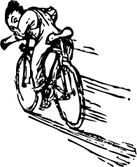
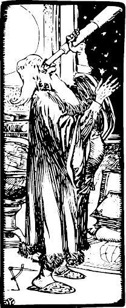

You are here: Home Dive Into HTML5
Geolocation is the art of figuring out where you are in the world and (optionally) sharing that information with people you trust. There is more than one way to figure out where you are — your IP address, your wireless network connection, which cell tower your phone is talking to, or dedicated GPS hardware that calculates latitude and longitude from information sent by satellites in the sky.
Q: Geolocation sounds scary. Can I turn it off?
A: Privacy is an obvious concern when you’re talking about sharing your physical location with a remote web server. The geolocation API explicitly states: “User Agents must not send location information to Web sites without the express permission of the user.” In other words, sharing your location is always opt-in. If you don’t want to, you don’t have to.
The geolocation API lets you share your location with trusted web sites. The latitude and longitude are available to JavaScript on the page, which in turn can send it back to the remote web server and do fancy location-aware things like finding local businesses or showing your location on a map.
As you can see from the following table, the geolocation API is supported by most browsers on the desktop and mobile devices. Additionally, some older browsers and devices can be supported by wrapper libraries, as we’ll see later in this chapter.
| IE | Firefox | Safari | Chrome | Opera | iPhone | Android |
|---|---|---|---|---|---|---|
| 9.0+ | 3.5+ | 5.0+ | 5.0+ | 10.6+ | 3.0+ | 2.0+ |
Along with support for the standard geolocation API, there are a plethora of device-specific APIs on other mobile platforms. I’ll cover all that later in this chapter.
The geolocation API centers around a new property on the global navigator object: navigator.geolocation.
The simplest use of the geolocation API looks like this:
function get_location() {
navigator.geolocation.getCurrentPosition(show_map);
}That has no detection, no error handling, and no options. Your web application should probably include at least the first two of those. To detect support for the geolocation API, you can use Modernizr:
function get_location() {
if (Modernizr.geolocation) {
navigator.geolocation.getCurrentPosition(show_map);
} else {
// no native support; maybe try a fallback?
}
}I CAN HAS GEO?
What you do without geolocation support is up to you. I’ll explain the JavaScript fallback option in a minute, but first I want to talk about what happens during that call to getCurrentPosition(). As I mentioned at the beginning of this chapter, geolocation support is opt-in. That means your browser will never force you to reveal your current physical location to a remote server. The user experience differs from browser to browser. In Mozilla Firefox, calling the getCurrentPosition() function of the geolocation API will cause the browser to pop up an “infobar” at the top of the browser window. The infobar looks like this:
There’s a lot going on here. You, as the end user,
Furthermore, this infobar is
You just saw the JavaScript code that causes this infobar to appear. It’s a single function call which takes a callback function (which I called show_map). The call to getCurrentPosition() will return immediately, but that doesn’t mean that you have access to the user’s location. The first time you are guaranteed to have location information is in the callback function. The callback function looks like this:
function show_map(position) {
var latitude = position.coords.latitude;
var longitude = position.coords.longitude;
// let's show a map or do something interesting!
}The callback function will be called with a single parameter, an object with two properties: coords and timestamp. The timestamp is just that, the date and time when the location was calculated. (Since this is all happening asynchronously, you can’t really know when that will happen in advance. It might take some time for the user to read the infobar and agree to share their location. Devices with dedicated GPS hardware may take some more time to connect to a GPS satellite. And so on.) The coords object has properties like latitude and longitude which are exactly what they sound like: the user’s physical location in the world.
| Property | Type | Notes |
|---|---|---|
coords.latitude | double | decimal degrees |
coords.longitude | double | decimal degrees |
coords.altitude | double or null | meters above the reference ellipsoid |
coords.accuracy | double | meters |
coords.altitudeAccuracy | double or null | meters |
coords.heading | double or null | degrees clockwise from true north |
coords.speed | double or null | meters/second |
timestamp | DOMTimeStamp | like a Date() object
|

Only three of the properties are guaranteed to be there (coords.latitude, coords.longitude, and coords.accuracy). The rest might come back null, depending on the capabilities of your device and the backend positioning server that it talks to. The heading and speed properties are calculated based on the user’s previous position, if possible.
Geolocation is complicated. Things can go wrong. I’ve mentioned the “user consent” angle already. If your web application wants the user’s location but the user doesn’t want to give it to you, you’re screwed. The user always wins. But what does that look like in code? It looks like the second argument to the getCurrentPosition() function: an error handling callback function.
navigator.geolocation.getCurrentPosition(
show_map, handle_error)If anything goes wrong, your error callback function will be called with a PositionError object.
| Property | Type | Notes |
|---|---|---|
code | short | an enumerated value |
message | DOMString | not intended for end users |
The code property will be one of
PERMISSION_DENIED (1) if the user clicks that “Don’t Share” button or otherwise denies you access to their location.
POSITION_UNAVAILABLE (2) if the network is down or the positioning satellites can’t be contacted.
TIMEOUT (3) if the network is up but it takes too long to calculate the user’s position. How long is “too long”? I’ll show you how to define that in the next section.
Be gracious in defeat
function handle_error(err) {
if (err.code == 1) {
// user said no!
}
}Q: Does the geolocation API work on the International Space Station, on the moon, or on other planets?
A: The geolocation specification states, “The geographic coordinate reference system used by the attributes in this interface is the World Geodetic System (2d) [WGS84]. No other reference system is supported.” The International Space Station is orbiting Earth, so astronauts on the station can describe their location by latitude, longitude, and altitude. However, the World Geodetic System is Earth-centric, so it can’t be used to describe locations on the moon or on other planets.
Some popular mobile devices — like the iPhone and Android phones — support two methods of figuring out where you are. The first method triangulates your position based on your relative proximity to different cellular towers operated by your phone carrier. This method is fast and doesn’t require any dedicated GPS hardware, but it only gives you a rough idea of where you are. Depending on how many cell towers are in your area, “a rough idea” could be as little as one city block or as much as a kilometer in every direction.
The second method actually uses dedicated GPS hardware on your device to talk to dedicated GPS positioning satellites that are orbiting the Earth. GPS can usually pinpoint your location within a few meters. The downside is that the dedicated GPS chip on your device draws a lot of power, so phones and other general purpose mobile devices usually turn off the chip until it’s needed. That means there will be a startup delay while the chip is initializing its connection with the GPS satellites in the sky. If you’ve ever used Google Maps on an iPhone or other smartphone, you’ve seen both methods in action. First you see a large circle that approximates your position (finding the nearest cell tower), then a smaller circle (triangulating with other cell towers), then a single dot with an exaction position (given by GPS satellites).
The reason I mention this is that, depending on your web application, you may not need high accuracy. If you’re just looking for nearby movie listings, a “low accuracy” location is probably good enough. There aren’t that many movie theaters, even in dense cities, and you’ll probably be listing more than one of them anyway. On the other hand, if you’re giving turn by turn directions in real time, you really do need to know exactly where the user is so you can say “turn right in 20 meters” or whatever.
The getCurrentPosition() function has an optional third argument, a PositionOptions object. There are three properties you can set in a PositionOptions object. All the properties are optional. You can set any or all or none of them.
| Property | Type | Default | Notes |
|---|---|---|---|
enableHighAccuracy | Boolean | false | true might be slower |
timeout | long | (no default) | in milliseconds |
maximumAge | long | 0 | in milliseconds |
The enableHighAccuracy property is exactly what it sounds like. If true, and the device can support it, and the user consents to sharing their exact location, then the device will try to provide it. Both iPhones and Android phones have separate permissions for low- and high-accuracy positioning, so it is possible that calling getCurrentPosition() with enableHighAccuracy:true will fail, but calling with enableHighAccuracy:false would succeed.
The timeout property is the number of milliseconds your web application is willing to wait for a position. This timer doesn’t start counting down until after the user gives permission to even try to calculate their position. You’re not timing the user; you’re timing the network.
The maximumAge property allows the device to answer immediately with a cached position. For example, let’s say you call getCurrentPosition() for the first time, the user consents, and your success callback function is called with a position that was calculated at exactly 10:00 AM. Exactly one minute later, at 10:01 AM, you call getCurrentPosition() again with a maximumAge property of 75000.
navigator.geolocation.getCurrentPosition(
success_callback, error_callback, {maximumAge: 75000});What you’re saying is that you don’t necessarily need the user’s current location. You would be satisfied with knowing where they were 75 seconds ago (75000 milliseconds). The device knows where the user was 60 seconds ago (60000 milliseconds), because it calculated their location after the first time you called getCurrentPosition(). So the device doesn’t bother to recalculate the user’s current location. It just returns exactly the same information it returned the first time: same latitude and longitude, same accuracy, and same timestamp (10:00 AM).

Before you ask for the user’s location, you should think about just how much accuracy you need, and set enableHighAccuracy accordingly. If you need to find their location more than once, you should think about how old the information could be and still be useful, and set maximumAge accordingly. If you need to find their location continuously, then getCurrentPosition() is not for you. You need to upgrade to watchPosition().
The watchPosition() function has the same structure as getCurrentPosition(). It takes two callback functions, a required one for success and an optional one for error conditions, and it can also take an optional PositionOptions object that has all the same properties you just learned about. The difference is that your callback function will be called every time the user’s location changes. There is no need to actively poll their position. The device will determine the optimal polling interval, and it will call your callback function whenever it determines that the user’s position has changed. You can use this to update a visible marker on a map, provide instructions on where to go next, or whatever you like. It’s entirely up to you.
The watchPosition() function itself returns a number. You should probably store this number somewhere. If you ever want to stop watching the user’s location change, you can call the clearWatch() method and pass it this number, and the device will stop calling your callback function. If you’ve ever used the setInterval() and clearInterval() functions in JavaScript, this works the same way.
Prior to version 9 (technically 9.0RC1), Internet Explorer did not support the W3C geolocation API that I’ve just described. But don’t despair! For these prior versions, we will need a JavaScript fallback. It’s not quite the same as the W3C geolocation API, but it serves the same purpose.
While we’re on the subject of legacy platforms, I should point out that many older mobile phone platforms had their own device-specific geolocation APIs. BlackBerry, Nokia, Palm, and OMTP BONDI all provide their own geolocation APIs. Of course, they all work differently which in turn works differently from the W3C geolocation API. Wheeeeee!
geoPositon.js is an open source, MIT-licensed JavaScript library that smooths over the differences between the W3C geolocation API, IP geolocation services, and the APIs provided by mobile platforms. To use it, you’ll need to add one <script> element at the bottom of your page. (Technically, you could put it anywhere, but scripts in your <head> will make your page load more slowly. So don’t do that!)
<!DOCTYPE html>
<html>
<head>
<meta charset="utf-8">
<title>Dive Into HTML5</title>
</head>
<body>
...
<script src="geoPosition.js"></script>
</body>
</html>
Don’t let it go to your <head>
Now you’re ready to use whichever geolocation API is installed.
if (geoPosition.init()) {
geoPosition.getCurrentPosition(geoSuccess, geoError);
}
Let’s take that one step at a time. First, you need to explicitly call an init() function. The init() function returns true if a supported geolocation API is available.
if (geoPosition.init()) {Calling the init() function does not actually find your location. It just verifies that finding your location is possible. To actually find your location, you need to call the getCurrentPosition() function.
geoPosition.getCurrentPosition(geoSuccess, geoError);The getCurrentPosition() function will trigger your browser to ask for your permission to find and share your location. If your browser natively supports the geolocation API, it will display an infobar at the top of the page asking whether you want to share your location with this web site.
The getCurrentPosition() function takes two callback functions as arguments. If the getCurrentPosition() function was successful in finding your location — that is, you gave your permission and the geolocation API actually worked its magic — it will call the function passed in as the first argument. In this example, the success callback function is called geoSuccess.
geoPosition.getCurrentPosition(geoSuccess, geoError);The success callback function takes a single argument, which contains the position information.
Success callback
function geoSuccess(p) {
alert("Found you at latitude " + p.coords.latitude +
", longitude " + p.coords.longitude);
}If the getCurrentPosition() function could not find your location — either because you declined to give your permission, or the geolocation API failed for some reason — it will call the function passed in as the second argument. In this example, the failure callback function is called geoError.
geoPosition.getCurrentPosition(geoSuccess, geoError);The failure callback function takes no arguments.
Failure callback
function geoError() {
alert("Could not find you!");
}geoPosition.js does not currently support the watchPosition() function. If you need continuous location information, you’ll need to actively poll getCurrentPosition() yourself.
Here is a live example of using geoPosition.js to attempt to get your location and display a map of your immediate surroundings:
How does it work? Let’s take a look. On page load, this page calls geoPosition.init() to determine whether geolocation is available through any of the interfaces that geoPosition.js supports. If so, it sets up a link you can click to look up your location. Clicking that link calls the lookup_location() function, shown here:
function lookup_location() {
geoPosition.getCurrentPosition(show_map, show_map_error);
}If you give your consent to track your location, and the backend service was actually able to determine your location, geoPosition.js calls the first callback function, show_map(), with a single argument, loc. The loc object has a coords property which contains latitude, longitude, and accuracy information. (This example doesn’t use the accuracy information.) The rest of the show_map() function uses the Google Maps API to set up an embedded map.
function show_map(loc) {
$("#geo-wrapper").css({'width':'320px','height':'350px'});
var map = new GMap2(document.getElementById("geo-wrapper"));
var center = new GLatLng(loc.coords.latitude, loc.coords.longitude);
map.setCenter(center, 14);
map.addControl(new GSmallMapControl());
map.addControl(new GMapTypeControl());
map.addOverlay(new GMarker(center, {draggable: false, title: "You are here (more or less)"}));
}If geoPosition.js is unable to determine your location, it calls the second callback function, show_map_error().
function show_map_error() {
$("#live-geolocation").html('Unable to determine your location.');
}
This has been “You Are Here (And So Is Everybody Else).” The full table of contents has more if you’d like to keep reading.
In association with Google Press, O’Reilly is distributing this book in a variety of formats, including paper, ePub, Mobi, and DRM-free PDF. The paid edition is called “HTML5: Up & Running,” and it is available now. This chapter is included in the paid edition.
If you liked this chapter and want to show your appreciation, you can buy “HTML5: Up & Running” with this affiliate link or buy an electronic edition directly from O’Reilly. You’ll get a book, and I’ll get a buck. I do not currently accept direct donations.
Copyright MMIX–MMXI Mark Pilgrim